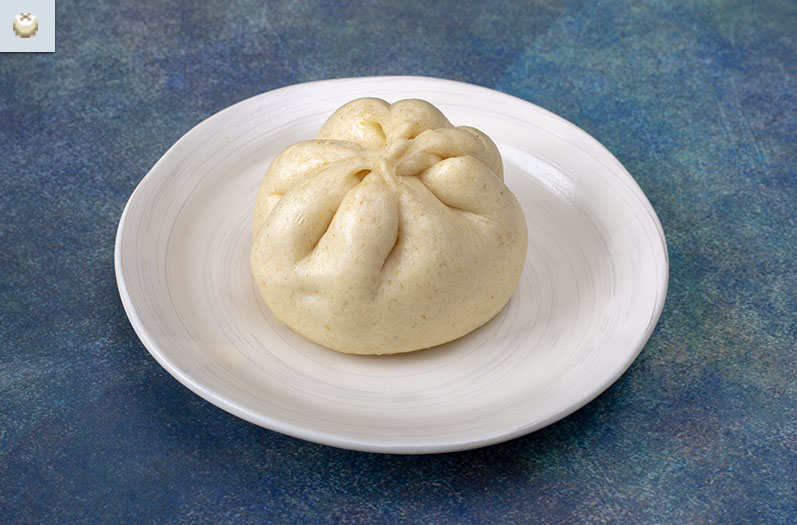

Enter the Gungeon: Meatbuns

A Delicious and Hearty Snack for Dungeon Crawling
Cautiously winding downward, moving from floor to floor, a bullet hugs its gun and lets loose at anything that moves.
The smell of gunpowder is prevalant and pervasive...until a chest is cracked open and the savory smell of meatbuns
fills the air...
Ingredients:
Bao Dough:
- 1½ tsp yeast
- 1 cup warm water
- 1½ tbsp coconut oil
- 1 tbsp honey
- 3 cups all-purpose flour
- 1 tsp salt
- 2 tsp fennel seed, ground
- 1 tsp fenugreek, ground
- 2 tsp baking powder
Filling:
- 1½ lbs boneless short ribs
- 2 tbsp vegetable oil
- 6 garlic cloves
- ¼ cup soy sauce
- ¼ cup hoisin
- ½ cup rice wine
- ⅓ cup brown sugar
- ¼ cup gochujang
- 2 cups beef stock
- 2 lemongrass stalks
- 2 inch ginger
- 1 cinnamon stick
- 3 star anise
- salt (to taste)
- pepper (to taste)
- 3 scallions
- 1 bell pepper, diced
- 1/2 onion, diced
Steps:
Dough:
- Mix the yeast, water, coconut oil, and honey. Allow this to rest for 5 minutes or until the yeast becomes active.
- In the bowl of a stand mixer, combine the flour, salt, fennel seed, fenugreek, and baking powder. Set the mixer to the lowest setting and slowly add the yeast mixture. Mix until it all comes together.
- Place the dough in a oiled bowl and cover. Let it rest until you are ready to start making the bao.
Filling:
- Preheat your oven to 375℉. Place the ginger, lemongrass, cinnamon sticks and star anise on a baking tray. Bake for 15 minutes. Generously season the short ribs with salt and pepper.
- Once the baking time has passed, remove the tray and reduce the oven heat to 325℉. Place a dutch oven (or other large oven safe pot) with olive oil over medium-high heat.
- Add the garlic, lemongrass, ginger, cinnamon sticks and star anise. Allow this to cook for about 5 minutes. Cook each of the short ribs until all the sides are browned.
- Mix the soy sauce, hoisin, rice wine, brown sugar, gochujang, and beef broth together. Pour them into the pot.
- Add the meat and bring to a slight boil. Place the dutch oven (covered) in the oven and cook for 3-4 hours or until the meat is tender.
- Thirty minutes before the beef is finished cooking, place a pan over medium-high heat. Add the diced bell peppers and onions. Cook until softened, about 10 minutes. Set aside.
- After the meat is done cooking, it is time to prepare the filling. Take the beef and shred it in a bowl.
- Add the scallions, bell pepper, and onions. Mix until well combined. Feel free to add some of the sauce the meat was cooking in. Make sure to not add too much because it will make the filling too wet and that make the dough soggy. Season with salt and pepper.
Assembling the Bao:
- Take the dough and split them into small portions of about 50 grams. To make a bao, take one of the dough portions and roll it out into a circle. Avoid making each portion too thin.
- Add a small portion of meat. It is very important to avoid overfilling these. Take one of the ends of the dough and pinch it with the opposite end.
- Pinch the other two flat edges upwards. You should have something that looks similar to the left picture. Next, take two of the corners and pinch them towards the center.
- Take the other corners and pinch in the same way. After it has all been pinched together, twist the bunched group to seal the bao completely shut. Repeat for the remain portions.
- Heat a pan over medium- high heat with a bit of nonstick spray. Add the bao to the pan, make sure to give each an ½ inch space around itself. Pan fry the bao until the bottoms turn golden brown.
- Add ¼ cup of water to the pan. Cover and let steam for 5 minutes, or until the water has evaporated completely.
Back to main page